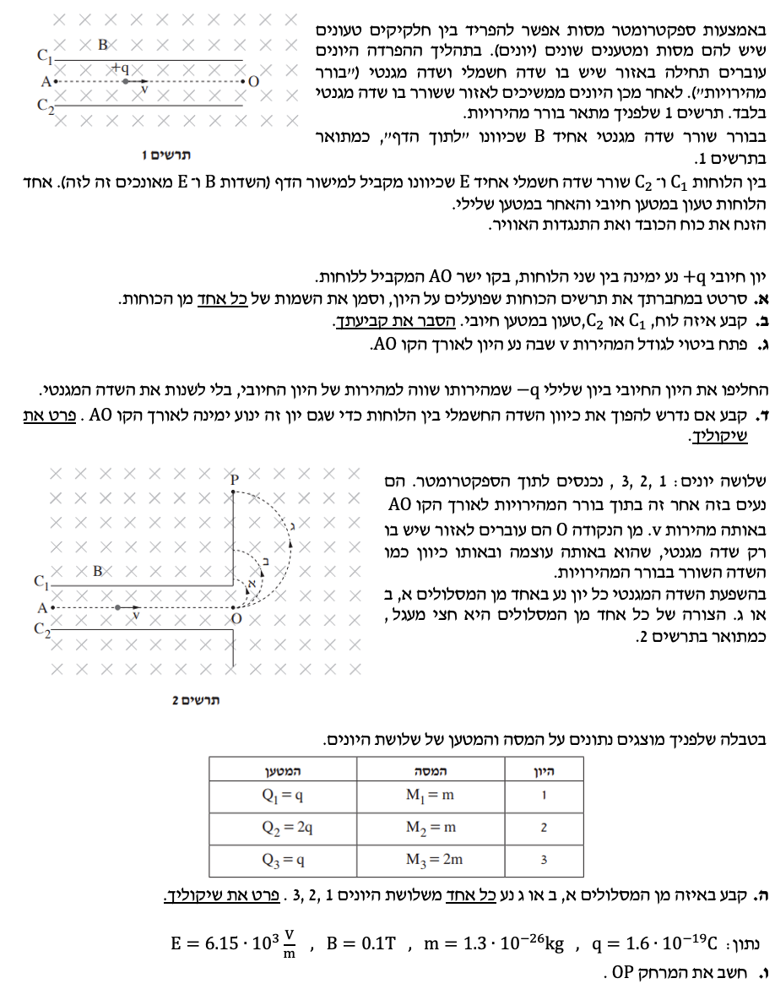

פתרון בגרות בפיזיקה - חשמל 2017
שאלה 4: ספקטרומטר מסות (בורר מהירויות ותנועה מעגלית)
פתרון מלא ומוסבר צעד-אחר-צעד עם דגשים פדגוגיים לכל סעיף.
ver
vAUTO
|
auto

תמונת השאלה המקורית
לא נמצאה תמונה בשם question-image.png באותה תיקייה.
- המרת יחידות (MKS): לפני כל תחילת חישוב, חובה לוודא שכל הנתונים מומרים ליחידות התקניות: מסה ב-$\text{kg}$, מטען ב-$\text{C}$, שדה חשמלי ב-$\text{V/m}$ (או $\text{N/C}$) ושדה מגנטי ב-$\text{T}$. בשאלה זו (סעיף ו') הנתונים כבר ניתנו ביחידות תקניות, אך זהו שלב בדיקה קריטי!
- מושג התאוצה: לעולם איננו משתמשים במילה "תאוטה". תאוצה $\vec{a}$ היא וקטור. אם כיוון התאוצה מנוגד לכיוון המהירות, נאמר ש"גודל המהירות קטן". במקרה של תנועה מעגלית בשדה מגנטי, התאוצה היא רדיאלית (צנטריפטלית), ולכן גודל המהירות אינו משתנה, רק כיוון המהירות משתנה.
- תאוצת הכובד: על פי ההנחיות $g = 10 \text{ m/s}^2$ (גודל חיובי). בשאלה ספציפית זו נאמר מפורשות: "הזנח את כוח הכובד", לכן לא נתחשב בו בחישובים.
מה נתון:
- יון בעל מטען חיובי $+q$ נע ימינה במהירות $\vec{v}$.
- שדה מגנטי אחיד $\vec{B}$ מכוון לתוך הדף.
- היון נע בקו ישר (לא סוטה).
- כוח הכובד מוזנח.
מה מחפשים:
לשרטט את הכוחות הפועלים על היון ולציין את שמותיהם.
תרשים הכוחות המלא (פתרון):
הסבר מילולי לשרטוט:
על היון פועלים שני כוחות מרכזיים (כוח הכובד מוזנח לפי הנתונים):
1. הכוח המגנטי ($\vec{F}_B$): לפי כלל יד ימין למטען חיובי (אצבעות לכיוון המהירות $\vec{v}$ ימינה, כיפוף לכיוון השדה $\vec{B}$ פנימה), האגודל מצביע כלפי מעלה. (מופיע בחץ הכחול).
2. הכוח החשמלי ($\vec{F}_E$): מכיוון שהיון נע בקו ישר במהירות קבועה, שקול הכוחות עליו חייב להיות אפס (החוק הראשון של ניוטון: $\Sigma\vec{F} = 0$). כדי לאזן את הכוח המגנטי שפועל כלפי מעלה, הכוח החשמלי חייב לפעול בדיוק בכיוון ההפוך - כלפי מטה. (מופיע בחץ הירוק).
הערה חשובה לשרטוט: שני החצים (הכחול והירוק) שורטטו בדיוק באותו האורך, כדי לסמן שהכוחות שווים בגודלם ומאפסים זה את זה.
הערת מורה - החוק הראשון של ניוטון
תנועה בקו ישר במערכת שיש בה שדות (ללא אילוצים מכניים) משמעותה ששקול הכוחות שווה לאפס. זהו עקרון הפעולה של "בורר מהירויות" - רק חלקיקים בעלי מהירות ספציפית מאוד יחוו איזון מוחלט בין הכוח המגנטי לכוח החשמלי ויצליחו לעבור בקו ישר.
מה נתון:
מצאנו בסעיף א' שהכוח החשמלי $\vec{F}_E$ הפועל על היון החיובי מכוון כלפי מטה (לעבר לוח $C_2$).
מה מחפשים:
לקבוע מי מהלוחות, $C_1$ (העליון) או $C_2$ (התחתון), טעון במטען חיובי, ולהסביר.
הסבר ופתרון:
ידוע כי מטענים שווי סימן דוחים זה את זה, ומטענים שוני סימן נמשכים זה לזה.
היון החולף בין הלוחות הוא חיובי (+q). מצאנו שהכוח החשמלי שפועל עליו הוא כלפי מטה.
משמעות הדבר היא שהיון נדחה מהלוח העליון ($C_1$) ונמשך ללוח התחתון ($C_2$).
לכן, הלוח העליון $C_1$ חייב להיות טעון במטען חיובי (כדי לדחות את היון החיובי כלפי מטה).
הערת מורה - כיוון שדה חשמלי
דרך נוספת להסביר: כוח חשמלי הפועל על מטען חיובי הוא בכיוון השדה החשמלי. כיוון שהכוח כלפי מטה, כך גם השדה $\vec{E}$. קווי שדה חשמלי יוצאים ממטען חיובי ונכנסים למטען שלילי. מכאן שהלוח ממנו יוצאים הקווים (העליון $C_1$) הוא החיובי.
מה נתון:
תנועה בקו ישר (שקול כוחות אפס). כוח חשמלי $F_E$ וכוח מגנטי $F_B$ מנוגדים בכיוונם.
מה מחפשים:
לפתח ביטוי פרמטרי (אותיות בלבד) למהירות $v$.
נוסחאות בשימוש:
$$ \Sigma F_y = 0 $$
$$ F_E = qE $$
$$ F_B = qvB\sin(\alpha) $$
(כאשר $\alpha = 90^\circ$ בין המהירות לשדה המגנטי, ולכן $\sin(90^\circ)=1$)
הצבה ופתרון (פיתוח):
נשווה את הגדלים של שני הכוחות (מכיוון שהם מאפסים זה את זה):
$$ F_E = F_B $$
$$ qE = qvB $$
נחלק את שני אגפי המשוואה במטען $q$ (שאינו אפס):
$$ E = vB $$
נבודד את המהירות $v$:
$$ v = \frac{E}{B} $$
הערת מורה - המטען מצטמצם!
שימו לב לתוצאה היפהפייה: המטען $q$ הצטמצם מהמשוואה! מה זה אומר פיזיקלית? זה אומר שבורר המהירויות מסנן חלקיקים אך ורק לפי המהירות שלהם, ללא קשר לגודל המטען שלהם או למסה שלהם. כל חלקיק (טעון) שיש לו את המהירות המדויקת של $v = E/B$ יעבור בקו ישר.
מה נתון:
מכניסים יון שלילי ($-q$) באותה מהירות $v$. לא משנים את השדה המגנטי.
מה מחפשים:
האם נדרש להפוך את כיוון השדה החשמלי כדי שהיון ימשיך לנוע בקו ישר?
הסבר ופתרון:
לא, אין צורך להפוך את כיוון השדה החשמלי.
נסביר בעזרת כוחות:
עבור יון שלילי הנע ימינה בשדה מגנטי פנימה, לפי כלל יד ימין (או שמאל למטען שלילי), הכוח המגנטי $\vec{F}_B$ מתהפך ופועל עתה כלפי מטה.
כדי שהיון ינוע בקו ישר, אנו זקוקים לכוח חשמלי $\vec{F}_E$ שיתנגד לו, כלומר יפעל כלפי מעלה.
השדה החשמלי שקבענו קודם מכוון כלפי מטה. כוח חשמלי הפועל על מטען שלילי הוא מנוגד לכיוון השדה. לכן, שדה חשמלי כלפי מטה יפעיל על המטען השלילי כוח חשמלי בדיוק כלפי מעלה, כפי שאנו צריכים!
לכן המערכת כולה נשארת מאוזנת ללא שום שינוי בכיוון השדות.
הערת מורה - דרך קצרה ואלגנטית
אפשר גם להסתכל על הנוסחה שפיתחנו בסעיף ג': $v = E/B$. שימו לב שהמשוואה הזו אינה מכילה את המטען $q$, ואפילו לא את הסימן שלו! המשמעות היא שהתנאי למעבר בקו ישר בבורר המהירויות זהה גם למטענים חיוביים וגם לשליליים (כל עוד הם נעים באותו כיוון התחלתי).
מה נתון:
- 3 יונים נכנסים מאזור הבורר (נקודה O) לאזור עם שדה מגנטי בלבד.
- לכולם אותה מהירות $v$ (כי עברו באותו בורר מהירויות).
- השדה המגנטי $B$ באזור זה שווה לשדה בבורר (כלומר, קבוע לכולם).
- נתוני היונים (מתוך הטבלה):
- יון 1: מטען $q$, מסה $m$
- יון 2: מטען $2q$, מסה $m$
- יון 3: מטען $q$, מסה $2m$
- ישנם 3 מסלולים בתרשים: א', ב', ג'. מסלול א' הוא בעל הרדיוס הקטן ביותר, ג' הוא בעל הרדיוס הגדול ביותר.
מה מחפשים:
להתאים כל אחד מהיונים 1, 2, 3 לאחד המסלולים (א', ב', ג') ולפרט את השיקולים.
נוסחה בשימוש (פיתוח רדיוס):
באזור זה פועל רק כוח מגנטי המהווה כוח צנטריפטלי הגורם לתנועה מעגלית:
$$ \Sigma F_r = m a_r $$
$$ qvB = m \frac{v^2}{R} $$
$$ R = \frac{mv}{qB} $$
הצבה ופתרון:
מכיוון שהמהירות $v$ והשדה המגנטי $B$ זהים עבור כל השלושה, רדיוס המסלול יחסי ישירות למסה ביחס למטען (ליחס $\frac{m}{q}$). נחשב יחס זה עבור כל יון:
-
יון 1: רדיוס בסיס שאליו נשווה.
$$ R_1 = \frac{m \cdot v}{q \cdot B} $$
-
יון 2: מסה $m$, מטען $2q$.
$$ R_2 = \frac{m \cdot v}{2q \cdot B} = \frac{1}{2} \left( \frac{mv}{qB} \right) = 0.5 R_1 $$
זהו הרדיוס הקטן ביותר מבין השלושה.
-
יון 3: מסה $2m$, מטען $q$.
$$ R_3 = \frac{2m \cdot v}{q \cdot B} = 2 \left( \frac{mv}{qB} \right) = 2 R_1 $$
זהו הרדיוס הגדול ביותר מבין השלושה.
מסקנה והתאמה למסלולים בשרטוט:
- מסלול א' (הרדיוס הקטן ביותר) שייך ליון 2.
- מסלול ב' (הרדיוס הבינוני) שייך ליון 1.
- מסלול ג' (הרדיוס הגדול ביותר) שייך ליון 3.
הערת מורה - תאוצה בתנועה מעגלית
חשוב לזכור: בתנועה המעגלית באזור זה, הכוח המגנטי תמיד מאונך למהירות. כוח המאונך למהירות אינו מבצע עבודה, ולכן אינו משנה את האנרגיה הקינטית. המשמעות היא שגודל המהירות אינו משתנה כלל לאורך חצי המעגל (המהירות קבועה בגודלה). התאוצה הקיימת כאן ($a_r = v^2/R$) אחראית אך ורק לשינוי כיוון המהירות בכל רגע.
מה נתון:
- $E = 6.15 \cdot 10^3 \text{ V/m}$
- $B = 0.1 \text{ T}$
- $m = 1.3 \cdot 10^{-26} \text{ kg}$
- $q = 1.6 \cdot 10^{-19} \text{ C}$
- המרחק הנדרש הוא OP. לפי השרטוט, נקודה P היא נקודת הפגיעה של מסלול ג' (יון מספר 3, כפי שמצאנו בסעיף הקודם).
מה מחפשים:
את המרחק מקו הכניסה O לנקודת הפגיעה P. היות והמסלול הוא חצי מעגל, המרחק OP מהווה את קוטר המסלול, כלומר פעמיים הרדיוס ($2 \cdot R_3$).
נוסחאות בשימוש:
$$ v = \frac{E}{B} $$
$$ R_3 = \frac{M_3 v}{Q_3 B} $$
$$ OP = 2 \cdot R_3 $$
הצבה ופתרון:
שלב 1: בדיקת יחידות (MKS)
השדה ב-V/m, שדה מגנטי ב-Tesla, מסה בקילוגרם ומטען בקולון. כל הנתונים כבר ביחידות תקניות (MKS). אפשר להמשיך להצבה.
שלב 2: חישוב מהירות הכניסה $v$
$$ v = \frac{6.15 \cdot 10^3}{0.1} = 6.15 \cdot 10^4 \text{ m/s} $$
שלב 3: חילוץ הנתונים הספציפיים עבור יון 3 (מסלול ג')
מתוך הטבלה, ליון 3 יש מסה של $2m$ ומטען $q$:
$$ M_3 = 2m = 2 \cdot 1.3 \cdot 10^{-26} = 2.6 \cdot 10^{-26} \text{ kg} $$
$$ Q_3 = q = 1.6 \cdot 10^{-19} \text{ C} $$
שלב 4: חישוב רדיוס מסלול ג' ($R_3$)
$$ R_3 = \frac{M_3 \cdot v}{Q_3 \cdot B} $$
$$ R_3 = \frac{(2.6 \cdot 10^{-26}) \cdot (6.15 \cdot 10^4)}{(1.6 \cdot 10^{-19}) \cdot 0.1} $$
$$ R_3 = \frac{15.99 \cdot 10^{-22}}{1.6 \cdot 10^{-20}} $$
$$ R_3 = 9.99375 \cdot 10^{-2} \text{ m} $$
נראה כי התוצאה קרובה מאוד ל- $0.1 \text{ m}$.
שלב 5: חישוב המרחק המבוקש OP (הקוטר)
$$ OP = 2 \cdot R_3 $$
$$ OP = 2 \cdot 9.99375 \cdot 10^{-2} \approx 0.199875 \text{ m} $$
תשובה סופית: המרחק OP הוא כ- $0.2 \text{ m}$ (או $20 \text{ cm}$).
הערת מורה - ניתוח גרפי והבנת השאלה
אחת הטעויות הנפוצות בסעיפים מסוג זה היא למהר להציב בנוסחה של $R = \frac{mv}{qB}$ את הנתונים $m$ ו-$q$ כמו שהם נתונים בשאלה.
החכמה כאן היא להבין קודם שהנקודה P נמצאת על המסלול הגדול ביותר (מסלול ג'), ולכן עלינו להציב את מסתו ומטענו של היון המתאים למסלול זה (יון 3), שהם $2m$ ו-$q$. בנוסף, חובה לזכור שהפגיעה בלוח משלימה חצי מעגל, ולכן המרחק מנקודת הכניסה הוא קוטר ולא רדיוס.